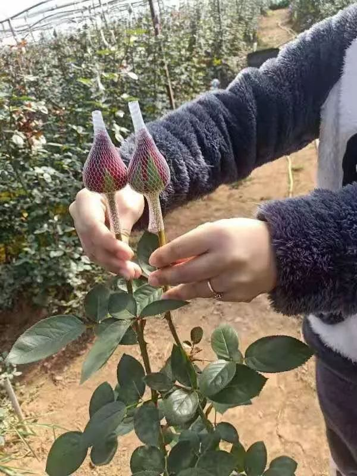

被销毁的100万支玫瑰
原文链接 备份链接 以下文章来源于市界 ，作者有趣有料的 灾难具有两面性。在惋惜花农遭受重大损失的同时，也侧面反映出来以云南花卉行业为代表的中国鲜花行业的问题。 文 | 李曙光 齐敏倩 编辑 | 廖影 “找我买花吧，一扎玫瑰20枝才二十 …
从春节持续到情人节、妇女节的这个花季，一直以来都是云南鲜花行业最重要的交易时段。
但是今年，花农们懵了。
疫情对鲜花行业的打击，几乎是致命的。
2 月 5 日开始，云南的商户已经开始成批地扔掉卖不出的玫瑰。
2 月 6 日，云南斗南鲜花拍卖市场宣布关闭，至 2 月 10 日才重新开放，但是因为交通管制、疫情防控等原因，这个昔日最热闹的鲜花交易市场，迎来了史上最萧条的情人节档期。
10 日当天，花拍中心的总供货量是 351.9 万枝，与去年同期相比下降 41%，而单支成交均价则创下三年最低记录，较去年同期大跌 70%。
而这个市场承担了全国 70%以上的鲜切花交易。
许多花农面对运不出去的鲜花，除了一天天的销毁，也没有别的办法。
昆明国际花卉拍卖交易中心 2 月 8 日发布的《关于疫情及雪灾对花卉产业及企业影响的报告》显示，今年第一季季度，云南花卉交易量约减少 8.42 亿支，交易额减少约 11.42 亿元，再加上物流、农资等各方面的投入，此次疫情加上不久前的雪灾，对整个鲜花行业造成的损失至少在 40 亿元左右。

△ 正在被销毁的鲜花
一时间，“一天上百万支玫瑰被销毁”的消息上了微博热搜，热搜背后，许多人行动了起来。
一间连夜开出的淘宝花店就是其中之一。
2 月 10 日，家在昆明的高华溢发了一条朋友圈：刚恢复电子交易的花卉市场没有生意，出口大受影响，大批鲜花需要寻找销路。远在杭州的吴小忆和高华溢是多年网友兼猫友。在朋友圈看到这条信息，吴小忆把求助信息转到了自己的朋友圈，也发到了近日活跃的民间援助志愿群。
但是应者寥寥。
吴小忆也问过在北京开花店的朋友，情况也不乐观，那位朋友说，离情人节的档期太近，作为花店的备货也来不及了，更何况因为疫情的影响，没人到店，自己的生意也十分惨淡。
人们没法出门去花店了，走线上卖行不行？
志愿者群里的果果举手了，她有一个闲置的淘宝服装店，店内没什么装修，也没有商品在架上，但是如果只需要做一个商品链接，这个店铺现在的状态足够用了。

△ 热心买家发来的买家秀
就这样，吴小忆提出义卖的点子，果果拿出自己的空淘宝店，高华溢则在昆明当地负责联络花农。一间新手花店准备开业。只是他们都没有想到，这件事需要参与其中的人付出比预计多得多的精力。
11 日下午，确定昆明当地还能用顺丰发货之后，“买花救农”的链接在果果闲置许久的淘宝店上架了。吴小忆自嘲说，自己莫名其妙就成了“卖花阿姨”，赶紧在群里吆喝大家来买花。
吴小忆和果果做客服，负责导出订单，高华溢则在云南负责供应链。
高华溢通过关系找到了其中一位花农郑武进，对方负责联络一批花农，每天将订单数量给到花农，次日清晨花农从地里采摘鲜花，再运到昆明打包、寄出。
花农不认转账，只认现金。在第一批订单到达之前，郑武进自己垫付了前期付给花农的货款和物流费用。
郑武进对接的花农来自云南楚雄州的两个镇，那里的鲜花种植面积大概有 2 万亩，疫情发生之后，大批鲜花滞销。
许多花农为化肥和花苗等前期投入已举债不菲，错过新春这个鲜花交易季，刚刚脱贫的花农们很可能会因债返贫。
最终寄到消费者手上的玫瑰品种是卡罗拉，只有 A 级的花能够走出大山，销售出来，A 级品质以下的玫瑰，目前仍然处于被花农就地销毁的状态。一位在一线城市的花店经营者告诉我们，这样的玫瑰视季节不同，零售价在 8-15 元之间。

△ 热心买家发来的买家秀
在花店上架的这些玫瑰，最终定价是 66 元 36+4 支，其中 +4 的这几支，是物流损耗备用，如果消费者收到的花有超过 4 支破损，客服会跟进赔偿。“我们的初衷是帮花农打开销路，运营和物流的成本只是粗略计算，究竟会亏多少，可能得过阵子才能算出来。”
录单、分拣、包装、物流，这一道道都是他们此前都不熟悉的环节。
尽管多年之前开过淘宝店，现在的淘宝后台对吴小忆来说无疑是陌生的，每天，团队都需要把批量订单信息生成表格，发到昆明，等快递公司回传单号以后，再一个一个手动输入到淘宝后台。
前期的八百个订单都是这样慢慢摸索着完成，直到两位拥有电商经验的伙伴带着设备，加入这个临时组成的团队。花店的运转效率开始提高。
因为各地交通管制的原因，物流的情况经常变化，有的前一天能发货的地区，第二天就发不了，也只能联系顾客退单。
有一天，后台出现了一个来自昆明的订单，那位顾客留言说不用发货，说：“我住在呈贡，就是斗南花卉在的那里，每天我们办公室楼下都有好多花农送来的花，不要钱，随便拿，这次花农损失太大了，买这个也是想着能帮帮他们，真的不用发货给我了！”
吴小忆拒绝了这种实质上是现金捐助的订单，因为任何一点让事情变复杂的情况，都是临时花店承受不起的。

△ 花田里刚摘下的玫瑰
一位团队素不相识的博主@PetitChou小周自己买了花，自发帮忙发到微博上安利。当天，小周那条 107 字的微博被转发超过一万次，人们都去淘宝上搜索“买花救农”，找到这家花店下单。
花店的小伙伴们对着爆单的后台傻眼了。
被快速涌入的订单砸晕了的团队不得不暂时将商品下架，但是高华溢在昆明获得的反馈是，花农当天已经采摘了一万扎鲜花，等待售卖。
而另一边在微博上，小周面对众多质疑和评论，只能一遍遍解释，请大家耐心等待。
确认好物流、商品重新上架，花店又运转了起来。已经收到花的消费者，则在微博上和微信群里，发来了买家秀照片。
△ 买家秀
花店开业到现在，刚好一周，团队的几位成员在这之前基本上都是朋友圈之交。吴小忆和高华溢是猫友，和果果则是在抗疫志愿者的群里认识。
从爆单那天的 8000 多单（因为物流限制，当日实际成交 7000 单），到现在每天平均 2000 多单的销量，这间临时花店的销量对于云南当地滞销的鲜花来说，仍然只是“九牛一毛”。
“我们现在就是尽一切努力多卖。”吴小忆没有计划这件事会持续做到什么时候，只是想，如果进展顺利，可以再压缩中间环节，给花农争取更好的价格。
情人节深夜，处理完当天的订单，吴小忆在朋友圈写下一句：“时代的一粒灰，落在个人头上，就是一座山。而我们想做的，无非是拉起手来用爱和善意试着托起这座沉重大山。”
△ 买家秀
疫情对各个行业的影响正一点一点展现出来，从对一线医护人员的物资捐助，到如今各大电商平台推出的助农项目，这一个个由普通人撑起的善意，也给每一个普通的你我力量，撑起最近这段日子里日复一日的失望、愤怒与无能为力。
希望更好的事情会发生。
友人评价买花救农的这个临时团队炽热又敏感，吴小忆说，她最喜欢的是加缪的那一句：
“在隆冬，我终于知道自己身上有一个不可战胜的夏天。”
互动时间
越多越多人物理复工了，说说你的复工生活吧，我从留言中选三位，分别送一份助农鲜花😉
唐云路
微信扫一扫赞赏作者 赞赏
长按二维码向我转账
受苹果公司新规定影响，微信 iOS 版的赞赏功能被关闭，可通过二维码转账支持公众号。
原文链接 备份链接 以下文章来源于市界 ，作者有趣有料的 灾难具有两面性。在惋惜花农遭受重大损失的同时，也侧面反映出来以云南花卉行业为代表的中国鲜花行业的问题。 文 | 李曙光 齐敏倩 编辑 | 廖影 “找我买花吧，一扎玫瑰20枝才二十 …
原文链接 备份链接 来源：图虫 记者：卢奕贝 编辑：牙韩翔 “ 疫情影响之下全球防护设备，尤其是口罩供不应求。这让所有口罩生产商的工厂都开始忙碌起来。 ” 一家名为Kolmi Hopen的公司突然收到了一大笔订单——5亿个口罩。 这家位于 …
原文链接 备份链接 胡建斌刚刚结束一个订单。受访者供图 记者：何雾 编辑：刘海川 “ “所有留下来的人，要让自己真实。病人住进病房，健康的人呆在屋里，医护上前线，我们行驶在街头上，这就是各司其职。” ” 年轻的护士在清晨坐上胡建斌的车。 …
原文链接 备份链接 “所有留下来的人，要让自己真实。病人住进病房，健康的人呆在屋里，医护上前线，我们行驶在街头上，这就是各司其职。” 胡建斌刚刚结束一个订单。受访者供图 记者 | 何雾 编辑 | 刘海川 1 年轻的护士在清晨坐上胡建斌 …
原文链接 备份链接 “安全套大卖”不只是一个玩笑，还有哪些意想不到的逆势上扬？ 文 |《财经》记者 杨立赟 编辑 | 余乐 今年2月14日，你收到玫瑰花了吗？ 各地对疫情严防死守，女士们在办公室收到一束玫瑰、接受同事们注目礼的戏码，不太 …